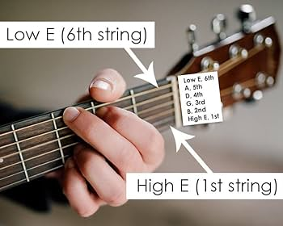

Гитара
Материал из Википедии — свободной энциклопедии
Последнее изменение: 15 марта 2024
Гитара
| Тип | Струнный инструмент |
|---|---|
| Классификация | Хордофон |
| Струны | 6 (стандартно) |
Введение
Гитара — струнный музыкальный инструмент, один из самых распространённых в мире. Применяется в качестве аккомпанирующего инструмента во многих музыкальных стилях, а также как сольный классический инструмент. Гитара используется в классической, народной, джазовой, рок- и поп-музыке, а также в блюзе, фламенко и других жанрах. Благодаря своей универсальности и доступности, гитара стала символом музыкального самовыражения для миллионов людей по всему миру.
- Гитара может быть как акустической, так и электрической.
- Существует множество разновидностей гитар: классическая, акустическая, электрогитара, бас-гитара, двенадцатиструнная и другие.
- Гитара — один из самых популярных инструментов для обучения музыке.
«Гитара — это маленький оркестр. Каждый аккорд — это вселенная» — Андрес Сеговия
Этимология
Слово «гитара» происходит от древнегреческого κιθάρα (кифара), что означало струнный инструмент. В свою очередь, греческое слово восходит к древнеперсидскому «тар», что означает «струна». В разных языках мира название инструмента схоже: guitar (англ.), guitarra (исп.), Gitarre (нем.), guitare (фр.).
- В Индии есть инструмент ситар, название которого также содержит корень «тар».
- В арабском мире существовал инструмент кытра, схожий по форме с гитарой.
История
История гитары насчитывает более 4000 лет. Первые струнные инструменты появились в древних цивилизациях Ближнего Востока и Египта. В Древней Греции существовала кифара, а в Риме — цитара. В Средние века в Европе появились лютня и виуэла, которые стали предшественниками современной гитары.
- Древние времена: Прототипы гитары встречались в Египте, Месопотамии, Греции и Риме.
- Средние века: В Европе распространились лютня и виуэла.
- XIX век: Испанский мастер Антонио Торрес придал гитаре современную форму и объём звучания.
- XX век: Появление электрогитары (Лео Фендер, Лес Пол) произвело революцию в музыке.
«Гитара — это голос души, который слышен сквозь века»
Типы гитар
| Тип | Описание | Применение |
|---|---|---|
| Классическая | С нейлоновыми струнами, мягкое и тёплое звучание. | Классика, фламенко, обучение |
| Акустическая | С металлическими струнами, громкое и яркое звучание. | Поп, рок, кантри |
| Электрогитара | Использует звукосниматели, требует усилитель. | Рок, джаз, блюз, металл |
| Бас-гитара | Низкий диапазон, основа ритм-секции. | Все современные жанры |
| Двенадцатиструнная | Двойные струны, богатое и объёмное звучание. | Фолк, рок |
Акустическая гитара
Классический вариант с нейлоновыми или металлическими струнами. Используется для аккомпанемента и сольной игры.
Электрогитара
Современный инструмент с магнитными звукоснимателями. Позволяет использовать эффекты и широкий диапазон звучания.
Классическая гитара
Традиционный инструмент с нейлоновыми струнами. Часто используется в классической и испанской музыке.
Бас-гитара
Инструмент с низким диапазоном, незаменим в ритм-секции группы.
Конструкция
Гитара состоит из следующих основных частей:
- Корпус — резонатор, усиливающий звук (у акустических гитар) или основа для крепления звукоснимателей (у электрогитар).
- Гриф — длинная часть с ладами, по которой прижимают струны.
- Головка грифа — место крепления колков для настройки струн.
- Струны — обычно 6, но бывают 7, 8 и 12-струнные варианты.
- Колки — механизмы для натяжения и настройки струн.
- Лады — металлические полоски на грифе, определяющие высоту звука.
- Бридж — место крепления струн на корпусе.
- Звукосниматели — у электрогитар преобразуют колебания струн в электрический сигнал.
«Настоящий музыкант знает свою гитару до последнего винтика»
Техника игры
Существует множество техник игры на гитаре, каждая из которых придаёт музыке уникальное звучание:
- Пальцевая техника — игра пальцами правой руки, характерна для классики и фламенко.
- Игра медиатором — используется в роке, поп- и джаз-музыке.
- Слайды — скольжение по струнам для создания плавных переходов.
- Бенды — подтягивание струны для изменения высоты звука.
- Вибрато — колебание струны для придания выразительности.
- Тэппинг — быстрые удары по грифу обеими руками (виртуозная техника).
- Мьютинг — приглушение струн ладонью или пальцами.
Гитара позволяет исполнять как аккордовую, так и мелодическую музыку, а также сложные соло и ритмические рисунки.
Известные гитаристы
Джими Хендрикс
Легендарный американский гитарист, оказавший огромное влияние на развитие рок-музыки и электрогитары. Известен своим новаторским стилем и виртуозной техникой.
Джо Сатриани
Виртуозный американский гитарист, мастер инструментального рока. Учитель многих известных музыкантов.
Стив Вай
Американский гитарист, композитор и продюсер, известный своей техникой и экспериментами со звуком.
Андрес Сеговия
Испанский классический гитарист, основатель современной школы классической гитары.
Дэвид Гилмор
Гитарист группы Pink Floyd, известный своим атмосферным звучанием и мелодичными соло.
Эрик Клэптон
Один из самых влиятельных блюзовых и рок-гитаристов XX века.
«Гитара — это не просто инструмент, это способ говорить без слов»